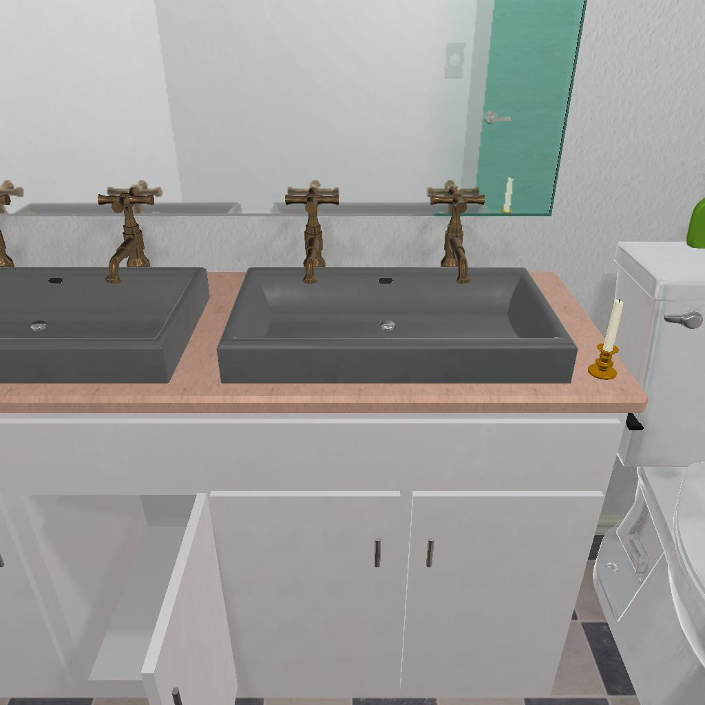

---------------------------------------------------------task: 9---------------------------------------------------------
--------------------------------------------------------------------------------------------------------------------------------------------------------------------
--------------------------------------------------------------------------------------------------------------------------------------------------------------------
Step:--------------------------------------------------------------------------6-------------------------------------------------------------------------------
----------------------------------------
VLM Prompt:
Image1:
Image2:
Image3:
**Instruction**
1. Analyze the provided images to identify all visible household objects and compare the difference between images (e.h. whether the object is opened or not and taken on hand or not), focusing on those relevant to the task description "put some soapbottle on toilet."
2. Use the analysis of images and the task hint "The agent must find an object of the desired type, pick it up, find the correct location to place it, and put it down there." to answer the question: what is the most reasonable action in the choices for the task description "put some soapbottle on toilet"?
3. Decide and write the answer using the template: The answer is: (i): , where i is the real number. If there is no desired object in images, search every place based on **Initial Observation** to find the object. And if no one is exactly correct, choose a similar answer.
**Initial Observation**
You are in the middle of a room. Looking quickly around you, you can see bathtub (1), bathtubbasin (1), toilet (1), cabinet (1-4), sink (1-2), countertop (1), sinkbasin (1-2), toiletpaperhanger (1), towelholder (1), garbagecan (1), handtowelholder (1)
**Answer Choices**
(1): go to bathtub 1
(2): go to bathtubbasin 1
(3): go to toilet 1
(4): go to cabinet 1
(5): go to cabinet 3
(6): go to sink 1
(7): go to sink 2
(8): go to countertop 1
(9): go to cabinet 4
(10): go to sinkbasin 1
(11): go to sinkbasin 2
(12): go to toiletpaperhanger 1
(13): go to towelholder 1
(14): go to garbagecan 1
(15): go to handtowelholder 1
(16): close cabinet 2
(17): take faucet 1 from cabinet 2
(18): take faucet 2 from cabinet 2
(19): take cloth 1 from cabinet 2
(20): take candle 1 from cabinet 2
(21): take spraybottle 1 from cabinet 2
**Answer**
Let's think step by step by following the instructions.
----------------------------------------
----------------------------------------
Original Response:
Firstly, we need to identify all visible household objects in the images and note any differences between them. In all three images, we see a sink with two faucets, a mirror, a countertop, and a cabinet with doors under the sink. Image1 and Image2 are identical, showing the cabinet doors closed. Image3 shows one of the cabinet doors open, revealing a purple cloth inside.
The task description is "put some soapbottle on toilet," and the task hint suggests we need to find an object of the desired type (soapbottle), pick it up, find the correct location (toilet), and put it down there.
From the Initial Observation, we know there are several cabinets in the room. Since the soapbottle is not visible in any of the provided images, we need to search inside these cabinets to find it.
Considering all this, the most reasonable action to perform next for the task description "put some soapbottle on toilet" is to go to one of the cabinets that have not been opened yet. Since cabinet 2 is already open and doesn't contain the soapbottle, we can eliminate it.
The answer is: (4): go to cabinet 1. This action is reasonable because cabinet 1 is unopened, and it's possible that the soapbottle we are looking for could be inside. If cabinet 1 does not contain the soapbottle, we would proceed to check other cabinets following the same logic.
----------------------------------------
----------------------------------------
>>> Refine Original VLM Response and Get Pure Action: go to cabinet 1
----------------------------------------
-----------------------------------------------------------------
Running time: 27.581266164779663 seconds
Total Money: 4.311390000000002
-----------------------------------------------------------------
-----------------------------------------------------------------
Text Observation:You arrive at loc 3. The cabinet 1 is open. On the cabinet 1, you see a faucet 1, a faucet 2, a cloth 1, a candle 1, and a spraybottle 1.
-----------------------------------------------------------------
UNSUCCEED